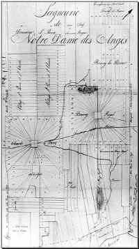

Décès
Mort de Georgiana Pageau, mère d'Ézilda
Texte de Nicole
Née: 25 juillet 1865 Décédée: 4 août 1951 page d'origine
Ézilda CôtéGaudias Côté et Georgiana Pageau
Sources : Chez les Consigny — arbre_genealogique · Chez les Consigny — VIE
1950–2005
Les dernières années de Marie-Anna et d'Ézilda, la famille de Gérard et Jacqueline, puis les sites web de Nicole. Par respect pour la vie privée, les générations récentes ne sont qu'évoquées.
Née: 25 juillet 1865 Décédée: 4 août 1951 page d'origine
Ézilda CôtéGaudias Côté et Georgiana Pageau
Sources : Chez les Consigny — arbre_genealogique · Chez les Consigny — VIE
Paroisse Saint-Barthélemy. Marie-Anna achète ensuite un immeuble de six logements et habite le rez-de-chaussée; deux de ses fils et leurs familles y ont un logement.
Les sources diffèrent
Adresse de Marie-Anna.
En 1952 Marie-Anna déménage rue Des Écores dans la paroisse Saint-Barthélemy. L'année suivante elle achète le bloc de six logements voisin au sud et emménage au rez-de-chaussée, le 7082. Ses fils Gérard et Jean-Noël y louent chacun un logement. Les loyers constituent son revenu principal. page d'origine
Par l'annuaire Lovell* de 1952, nous savons que Gérard et sa famille s'installe au 7078 Des Écores et que sa mère Marie-Anna déménage tout près, au 7092 rue Des Écores dans la paroisse St-Barthélemy. Qui a suivi l'autre? C'est le deuxième étage d'une résidence jouxtant au sud un bloc de six logements dont Marie-Anna devient propriétaire l'année suivante. Elle emménage alors dans le logement nord du rez-de-chaussée, le 7082. En 1954, Jean-Noël déménage à côté, au 7080. Les loyers constituent son revenu principal. page d'origine
De 1946 à 1964 Marie-Anna a vingt-un petits-enfants. Dans les années 1950 elle habite le rez-de-chaussée d'un bloc de six logements, qu'elle a acheté sur la rue des Écores, à Montréal. Deux de ses fils, et leur famille, habitent des logements dans le même bloc. Marie-Anna aime tout ce qui est nouveau et moderne et se les procure dès leur mise en marché: frigidaire, douche, T.V.... Elle aime avoir toujours le dernier modèle d'un produit, et ses enfants le lui achètent quand ils vont, à l'occasion, à New-York. page d'origine
Marie-Anna CaronGérard CharetteJacqueline Consigny
Sources : 10e génération — Rosario et Marie-Anna — m_a-ros · Marie-Anna Caron et Rosario Charette — marie-anna · Deux vies en parallèle
Ghislaine entre dans la communauté religieuse de la Présentation de Marie et prononce ses vœux le 2 février 1956. page d'origine
Sources : 10e génération — Rosario et Marie-Anna — descendance · Marie-Anna Caron et Rosario Charette — marie-anna
Elle reste propriétaire de l'immeuble; Gérard, lui, habite alors Saint-Luc.
En 1957 Marie-Anna déménage dans une résidence pour personnes âgées sur le boulevard Gouin, et quelques années plus tard, dans un hospice de Marieville, son état de santé se détériorant. Marie-Anna y décède le 8 juillet 1966, à l'âge de 69 ans, d'un cancer des intestins. page d'origine
À partir de l'annuaire Lovell* de 1957, nous ne trouvons plus de traces de Marie-Anna sur la rue Des Écores, ni ailleurs. Nous savons qu'elle en sera la propriétaire jusqu'à son décès, mais elle n'y habite plus. Gérard non plus, il réside à St-Luc mais continue à travailler pour la Ville de Montréal. Seul Jean-Noël y habite jusqu'en 1960 inclusivement, suite à quoi il emménage à Pont-Viau. À noter que le nom de Gérard apparaît encore dans certains annuaires, je pense que c'est parce qu'il devait fournir une adresse à Montréal pour avoir le droit de travailler pour la Ville. Il lui fallait aussi être un résident de Montréal pour inscrire ses enfants à la Bibliothèque de Montréal. page d'origine
Marie-Anna CaronGérard Charette
Sources : 10e génération — Rosario et Marie-Anna — m_a-ros · Marie-Anna Caron et Rosario Charette — marie-anna
Le 24 mai 1957 son fils aîné Benoît décède d'un cancer généralisé. La famille ne garde pas contact avec la veuve et les trois filles de Benoît. page d'origine
Sources : 10e génération — Rosario et Marie-Anna — m_a-ros · Marie-Anna Caron et Rosario Charette — marie-anna
Gérard et Jacqueline ont neuf enfants : la douzième génération Charette depuis Mathieu Choret.
Gérard CharetteJacqueline Consigny
Sources : Les quatorze générations Charette d'Amérique — gen12 · 11e génération — Gérard Charette
L'appel d'urgence est reçu par son gendre Gérard Charette, répartiteur à la police de Montréal. Elle est inhumée dans une fosse commune du cimetière de Côte-des-Neiges.
Ézilda décède chez-elle le 17 octobre 1964. Elle aurait succombé à des problèmes respiratoires suite à des travaux de peinture qu'elle avait entrepris seule dans son logement, ou, selon d'autres, à un anévrisme. C'est son petit-fils Robert Daoust qui aurait donné l'alerte. Son frère Gilles se souvient que c'était une très belle journée d'automne, il se rappelle voir arriver en trombe la voiture d'Arsène qui venait d'être informé de la situation. Arsène travaillait de nuit pour le Canadien National (les chemins de fer), il était donc chez-lui le jour et on a pu le rejoindre ainsi rapidement, sans doute l'a-t-on réveillé. page d'origine
Le hasard a voulu que l'appel d'urgence (ce qu'on appelle aujourd'hui le 911) ait été reçu par Gérard Charette, le gendre d'Ézilda. Il travaillait comme répartiteur des appels d'urgence pour la police de Montréal. Son horaire de travail était de six heures d'affilée par jour, et il "changeait de chiffre" chaque semaine. Donc le 17 octobre 1964, Gérard travaillait de jour et a envoyé lui-même les services d'urgence chez Ézilda. Mais il était trop tard. Gérard a quitté le travail pour se rendre rapidement sur les lieux, puis est retourné chez-lui à St-Luc annoncer de vive voix la nouvelle à Jacqueline. Voici le témoignage de Francine: " Je me rappelle que ce jour-là je jouais seule dehors, et il faisait beau. J'ai aperçu la voiture de papa lorsqu'elle a passé près de l'ex-garage de mon oncle Benoît. Je suis entrée en courant dire à maman que papa arrivait. Elle m'a répondu que c'était impossible, qu'il travaillait, mais c'était bien lui. Ils se sont retirés et il lui a annoncé la nouvelle." page d'origine
Ézilda espérait être enterrée près de son époux, mais ce ne fut évidemment pas possible. Aussi, suite à son décès le 17 octobre 1964, fut-elle inhumée dans une fosse commune au cimetière catholique Côte-des-Neiges . page d'origine
Ézilda CôtéGérard CharetteJacqueline Consigny
Sources : Chez les Consigny — VIE · Deux vies en parallèle
Marie-Anna meurt le 8 juillet 1966 à Marieville. Elle vivait dans un hospice géré par des religieuses depuis quelques années déjà, ayant besoin de soins constants suite à un cancer des intestins. page d'origine
Sources : Deux vies en parallèle · 10e génération — Rosario et Marie-Anna — m_a-ros · Marie-Anna Caron et Rosario Charette — marie-anna
Suite à des recherches dans le BMS2000, nous apprenons qu'Antoine épouse Éva Lamontagne le 6 octobre 1970, à Sherbrooke. Il s'agit sûrement de la conjointe de fait avec laquelle il a longtemps vécu. Éva s'était mariée une première fois à Sherbrooke en 1921 avec George Cross, originaire d'Angleterre, et avait eu, avec lui, une fille, Lilianne. Cette dernière s'est mariée en 1946 à Montréal. Ainsi, Antoine et Éva se sont finalement mariés, probablement quand cette dernière est devenue veuve, ils avaient plus de soixante-dix ans chacun. Antoine décède en décembre 1992. page d'origine
Sources : 10e génération — Rosario et Marie-Anna — enfance · Marie-Anna Caron et Rosario Charette — marie-anna

Parmi les tout premiers sites de la famille, créés à partir de septembre 2000.
Site consacré à la vie et à la famille d'Ézilda Côté et de Charles Consigny. Site créé le 25 novembre 2000. page d'origine
Sources : ZoneCharette — page d'accueil — intro · Chez les Consigny
Une page d'introduction mettant en parallèle les destins de deux femmes importantes dans la zonecharette: Marie-Anna et Ézilda. Page créée le 12 mai 2002. page d'origine
Sources : ZoneCharette — page d'accueil — intro · Deux vies en parallèle
UN SURVOL DU 17ÈME SIÈCLE, page créée le 28 mars 2004 pour compléter les sites consacrés à tous nos ancêtres arrivés au pays aux débuts de la colonie, soit au 17ème siècle. page d'origine
Elle compare la carte de 1709 à une carte récente : l'avenue du Bourg-Royal passe par endroits sur la terre de Mathieu.

Que l'avenue du Bourg-Royal chevauche, par endroits, la terre de Mathieu. Et qu'une partie de la terre semble encore un espace vert, selon la carte de 2005. Il faudrait aller voir de plus près ce qu'il en est au juste. page d'origine
Seize petits-enfants de 1947 à 1964; elle aide ses filles à chaque naissance et adore écouter la radio. Au milieu des années 1950, Fabiola et Elphège s'installent dans le logement voisin.
De 1947 à 1964 Ézilda a seize petits-enfants. Elle habite toujours la rue Létourneux. Elle aide avec dévouement aux "relevailles" de ses deux filles après chaque naissance. Ézilda aime écouter la radio et elle va souvent au cinéma dans le quartier. Elle ne s'achète un frigidaire, ou une T.V. qu'à la fin de sa vie. Les cadeaux modernes ne l'intéressent pas, elle les remise dans leur emballage au fond du placard. Par exemple, à un fer à repasser électrique, elle préfère ses vieux fers qu'elle fait chauffer sur son poêle à bois. page d'origine
Au milieu des années 1950, Ézilda peut compter sur sa fille Fabiola et son gendre Elphège qui emménagent dans le logement tout près, au 2175 Létourneux. Ils y vivent avec leurs quatre enfants. Elphège travaille comme concierge pour la Commission scolaire catholique. Quant à Arsène, il passe la majeure partie de sa vie d'homme marié sur la rue Orléans, aussi dans le quartier Maisonneuve. Seule Jacqueline vit plus loin de sa mère, d'abord dans le quartier Verdun, puis le Nord de Montréal, et à St-Luc, petit village du comté de St-Jean à environ vingt milles de Montréal. Elle visite quand même très régulièrement Ézilda. page d'origine
Sources : Deux vies en parallèle · Chez les Consigny — VIE
Né le 19 octobre 1921 à Montréal, Gérard est toute sa vie un homme de son temps. Il est de la génération de ceux et celles qui font la révolution tranquille pour assurer à leurs enfants une vie meilleure et, au Québec, une ouverture sur le monde. Gérard s'engage dans les nouveaux mouvements de société, souvent dès leurs débuts. Que ce soit le droit et l'importance de l'éducation pour tous, filles autant que garçons, le mouvement indépendantiste du début des années 1960, la tendance santé comme la naturopathie, l'homéopathie, les aliments naturels, le jeûne thérapeutique, etc... Gérard aime conduire tout ce qui roule sur quatre roues, voitures, taxis, camions, citerne ou remorque, il participe à des concours d'adresse, des rallyes. Il aime bouger, rencontrer plein de gens, faire partie de groupes ou d'associations de tous genres, suivre des cours, changer d'emploi, avoir toujours un ou deux emplois à temps partiel, en plus de son travail régulier. Ce dernier étant souvent "sur des chiffres", Gérard ne connaît pas un sommeil et une vie régulière, et ce pendant longtemps. page d'origine
Source : 11e génération — Gérard Charette